A esta altura você deve sentir que tem uma base sólida para se comunicar eficientemente com dados. Neste penúltimo capítulo, exploramos estratégias para enfrentar desafios comuns da comunicação com dados, por meio de vários estudos de caso.
Especificamente, vamos discutir:
Dentro de cada um desses estudos de caso, aplicarei as várias lições que abordamos para a comunicação efetiva com dados, mas limitarei minha discussão principalmente ao desafio específico em questão.
Na comunicação com dados, normalmente recomendo apenas fundo branco.
Vamos ver como um gráfico fica com fundo branco, cinza e preto. Veja a Figura 9.1.
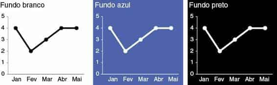
FIGURA 9.1 GRÁFICO SIMPLES SOBRE FUNDO BRANCO, AZUL E PRETO
Se você tivesse que descrever com uma palavra como os fundos azul e preto na Figura 9.1 o fazem se sentir, qual seria? Para mim, seria pesado. Com o fundo branco, acho fácil enfocar os dados. Os fundos escuros, por outro lado, arrastam meus olhos para lá — para o fundo —, fora dos dados. Elementos claros sobre um fundo escuro podem criar um contraste mais nítido, mas geralmente são mais difíceis de ler. Por isso, normalmente evito fundos escuros e coloridos.
Dito isso, às vezes existem considerações, fora do cenário ideal para a comunicação com dados, que devem ser levadas em conta, como a marca de sua empresa ou cliente e o modelo padrão correspondente. Foi esse o desafio que enfrentei em um projeto de consultoria.
Não reconheci isso imediatamente. Foi somente após eu ter concluído minha remodelação inicial do visual original do cliente que percebi que simplesmente não se encaixava na aparência dos produtos de trabalho que havia visto no seu grupo. O modelo dele era escuro e em sua face, com fundo preto matizado, cheia de pontos brilhantes, cores pesadamente saturadas. Em comparação, meu visual parecia bem fraco. A Figura 9.2 mostra uma versão generalizada de minha remodelação inicial de um visual exibindo opiniões da pesquisa de funcionários.
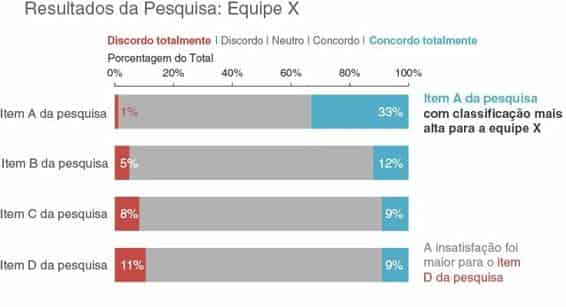
FIGURA 9.2 REMODELAÇÃO INICIAL SOBRE FUNDO BRANCO
Em um esforço para criar algo mais de acordo com a marca do cliente, refiz minha remodelação, usando o mesmo fundo escuro que havia usado em alguns dos outros exemplos compartilhados. Ao fazer isso, precisei inverter meu processo de pensamento normal. Com um fundo branco, quanto mais distante uma cor estiver do branco, mais se destacará (assim, cinza se destaca menos, enquanto preto se destaca muito). Com um fundo preto se dá o mesmo, mas preto se torna a linha de base (portanto, cinza se destaca menos e branco se destaca muito). Também percebi que algumas cores que normalmente são proibidas com fundo branco (por exemplo, amarelo) chamam muito a atenção contra preto (não usei amarelo nesse exemplo em particular, mas em alguns outros, sim).
A Figura 9.3 mostra como ficou minha versão do visual “mais de acordo com a marca do cliente”.
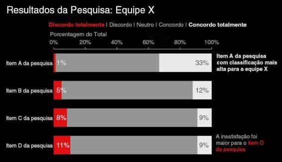
FIGURA 9.3 RECRIAÇÃO SOBRE FUNDO ESCURO
Embora o conteúdo seja exatamente o mesmo, note como a Figura 9.3 fica diferente comparada com a Figura 9.2. Essa é uma boa ilustração de como a cor pode impactar o tom global de uma visualização.
Uma charada frequente na comunicação com dados é quando uma única visão dos dados é usada para apresentação e para relatório. Ao apresentar conteúdo em um ambiente ao vivo, você quer conduzir seu público pela história, enfocando apenas a parte relevante do visual. Contudo, a versão que circula pelo seu público — como pré‐leitura ou informação, ou para aqueles que não puderam participar da reunião — precisa se sustentar sem que você, o apresentador, esteja lá para conduzi-lo.
Com muita frequência, usamos exatamente o mesmo conteúdo e recursos visuais para os dois propósitos. Isso normalmente torna o conteúdo detalhado demais para a apresentação ao vivo (particularmente se está sendo projetada no telão) e, às vezes, não detalhado o suficiente para o conteúdo circulado.
Isso causa o slidemento — parte apresentação, parte documento, e não atende exatamente as necessidades de ambos —, que citamos brevemente no Capítulo 1. A seguir, vamos ver uma estratégia para usar animação acoplada a um gráfico de linhas anotado para satisfazer as necessidades da apresentação e da circulação.
Vamos supor que você trabalhe em uma empresa que produz jogos sociais online. Você está interessado em contar a história sobre como os usuários ativos de determinado jogo — vamos chamá-lo de Moonville — têm aumentado no decorrer do tempo.
Você poderia usar a Figura 9.4 para falar sobre crescimento desde o lançamento do jogo, no final de 2013.
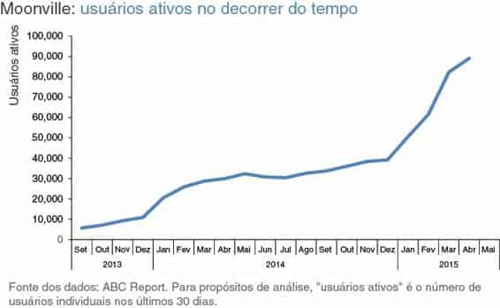
FIGURA 9.4 GRÁFICO ORIGINAL
O desafio, contudo, é que, quando você apresenta esse volume de dados para seu público, perde o controle de sua atenção. Você pode estar falando sobre uma parte dos dados, enquanto ele está enfocando algo totalmente diferente.
Talvez você queira contar a história cronologicamente, mas seu público pode pular imediatamente para o forte aumento em 2015 e se perguntar o que motivou isso. Ao fazer isso, ele para de ouvi-lo.
Como alternativa, você pode usar animação para conduzir o público em sua apresentação, à medida que conta os pontos correspondentes da história. Por exemplo, poderia começar com um gráfico em branco. Isso obrigaria o público a examinar os detalhes do gráfico com você, em vez de pular diretamente para os dados e começar a tentar interpretá-lo. Você pode usar essa estratégia para criar expectativa em seu público, o que o ajudará a manter sua atenção. A partir daí, mostro ou destaco subsequentemente apenas os dados relevantes ao meu ponto de vista específico, obrigando a atenção do público a estar exatamente onde quero, enquanto estou falando.
Eu poderia dizer — e mostrar — a seguinte progressão: Hoje, vou contar a vocês uma história de sucesso: o aumento no número de usuários de Moonville no decorrer do tempo. Primeiro, deixem-me definir o que estamos vendo. No eixo y vertical deste gráfico, vamos mostrar os usuários ativos. Isso é definido como o número de usuários individuais nos últimos 30 dias. Vamos ver como isso mudou no decorrer do tempo, desde o lançamento, no final de 2013, até hoje, mostrado ao longo do eixo x horizontal. (Figura 9.5)
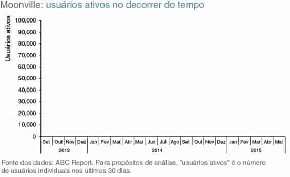
FIGURA 9.5
Lançamos o Moonville em setembro de 2013. No final desse primeiro mês, tínhamos pouco mais de 5.000 usuários ativos, denotados pelo ponto preto na parte inferior esquerda do gráfico. (Figura 9.6)
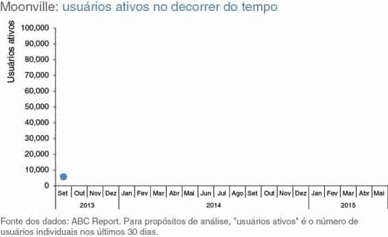
FIGURA 9.6
A reação inicial ao jogo era mista. Apesar disso — e da nossa praticamente total falta de marketing — o número de usuários ativos quase dobrou nos quatro primeiros meses, para quase 11.000 no final de dezembro. (Figura 9.7)
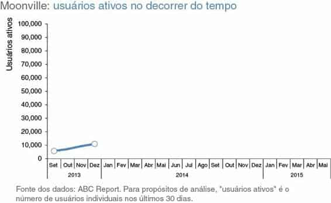
FIGURA 9.7
No início de 2014, o número de usuários ativos cresceu em uma trajetória mais pronunciada. Isso foi principalmente o resultado de promoções para amigos e famílias que fizemos durante esse tempo, para aumentar a visibilidade do jogo. (Figura 9.8)
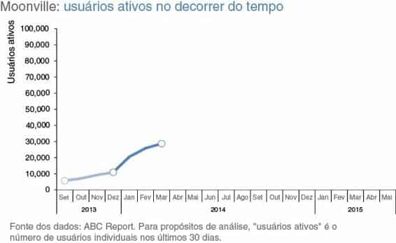
FIGURA 9.8
O crescimento foi muito pequeno no restante de 2014, pois interrompemos todos os esforços de marketing e focalizamos as melhorias na qualidade do jogo. (Figura 9.9)
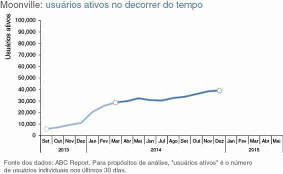
FIGURA 9.9
Por outro lado, o consumo neste ano tem sido incrível, superando nossas expectativas. O jogo remodelado e melhorado se tornou viral. As parcerias que formamos com canais de mídia social se mostraram um sucesso para continuar a aumentar nossa base de usuários ativos. Com as taxas de crescimento recentes, prevemos que vamos ultrapassar os 100.000 usuários ativos em junho! (Figura 9.10)
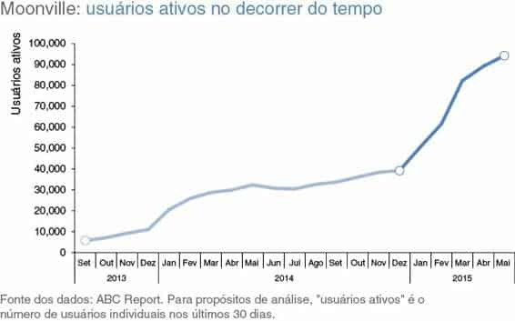
FIGURA 9.10
Para a versão mais detalhada que você distribui como acompanhamento ou para aqueles que perderam sua (excelente) apresentação, você pode usar uma que explique os pontos importantes da história diretamente no gráfico de linhas, como mostrado na Figura 9.11.
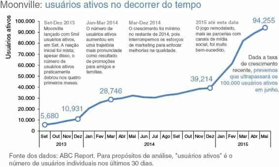
FIGURA 9.11
Essa é uma estratégia para criar um infográfico (ou, neste caso, um conjunto de infográficos) que satisfaça as necessidades de sua apresentação ao vivo e da versão distribuída. Note que, com essa estratégia, é imperativo conhecer bem sua história para narrá-la sem contar com seus infográficos (algo que você sempre deve ter por meta).
Se estiver usando software de apresentação, você pode montar tudo em um único slide e usar animação para a apresentação ao vivo, fazendo cada imagem aparecer e desaparecer, conforme o necessário, para formar a progressão desejada. Coloque a versão anotada final em cima para que seja tudo que apareça na versão impressa do slide. Se fizer isso, você pode usar exatamente a mesma pilha para a apresentação e para a comunicação que faz circular. Como alternativa, você pode colocar cada gráfico em um slide separado e folheá-los; nesse caso, seria conveniente distribuir a versão anotada final.
Deve haver lógica na ordem em que você exibe informações.
A declaração acima provavelmente é óbvia. Apesar disso, assim como muitas coisas que parecem lógicas quando as lemos, ouvimos ou dizemos, com muita frequência não as colocamos em prática. Esse é um exemplo disso.
Embora eu possa dizer que minha frase introdutória é universalmente verdadeira, vou enfocar aqui um exemplo muito específico para ilustrar o conceito: usar ordem para dados categóricos em um gráfico de barras horizontais.
Primeiro, vamos estabelecer o contexto. Digamos que você trabalha em uma empresa que vende um produto que tem vários recursos. Recentemente, você fez uma pesquisa com seus usuários para saber se eles estão empregando cada um dos recursos e o quanto estão satisfeitos com eles e quer usar esses dados. O gráfico inicial que você cria pode ser como o da Figura 9.12.
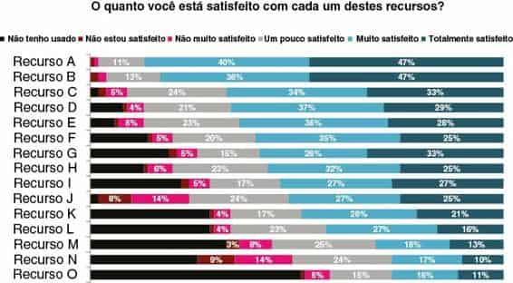
FIGURA 9.12 SATISFAÇÃO DO USUÁRIO, GRÁFICO ORIGINAL
Esse é um exemplo real, e a Figura 9.12 mostra o gráfico que foi criado para esse propósito, com a exceção de que substituí os nomes de recurso descritivos por Recurso A, Recurso B etc. Há uma ordem aqui — se observarmos os dados por algum tempo, veremos que estão organizados na ordem decrescente do grupo “Muito satisfeito”, mais o grupo “Totalmente satisfeito” (os verdes-azulados e verde-azulados escuros no lado direito do gráfico). Isso pode sugerir que é onde devemos prestar atenção. Mas, do ponto de vista da cor, meus olhos são atraídos primeiro para o segmento em preto “Não tenho usado”. E, se pensarmos sobre o que os dados mostram, talvez fossem as áreas de insatisfação que mais interessariam.
Parte do problema aqui é que está faltando a história — o “e daí” — dessa apresentação. Poderíamos contar várias histórias diferentes e enfocar vários aspectos diferentes desses dados. Vamos ver duas maneiras de fazer isso visando aproveitar a ordem.
Primeiro, poderíamos pensar em destacar a história positiva: onde nossos usuários estão mais satisfeitos. Veja a Figura 9.13.
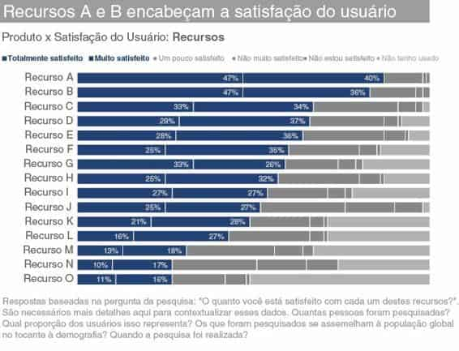
FIGURA 9.13 REALCE A HISTÓRIA POSITIVA
Na Figura 9.13, ordenei os dados claramente para colocar “Totalmente satisfeito”, mais “Muito satisfeito”, em ordem decrescente — como no gráfico original —, mas tornei isso muito mais evidente aqui, por meio de outras dicas visuais (a saber, a cor, mas também o posicionamento dos segmentos como a primeira série no gráfico, para que a atenção do público se volte primeiro a isso, ao percorrer da esquerda para a direita). Também usei palavras para ajudar a explicar por que sua atenção é chamada para onde é, por meio do título de ação na parte superior, que exalta o que você dever ver no visual.
Podemos usar essas mesmas táticas — ordem, cor, posicionamento, e palavras — para destacar uma história diferente dentro desses dados: onde os usuários estão menos satisfeitos. Veja a Figura 9.14.
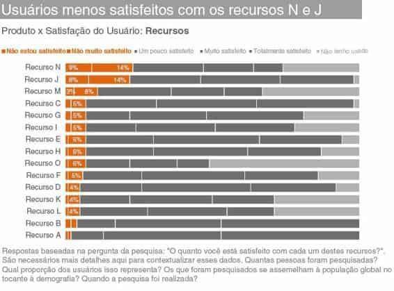
FIGURA 9.14 REALCE A INSATISFAÇÃO
Ou talvez a história real aqui esteja nos recursos não usados, o que poderia ser destacado como mostra a Figura 9.15.
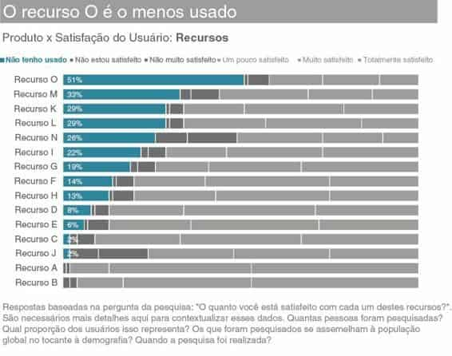
FIGURA 9.15 ENFOQUE NOS RECURSOS NÃO USADOS
Note que, na Figura 9.15, você ainda pode chegar a diferentes níveis de satisfação (ou da falta dela) dentro de cada barra, mas elas foram relegadas a uma comparação de segunda ordem devido às escolhas de cor que fiz, enquanto a ordem de classificação relativa do segmento “Não tenho usado” é claramente a principal comparação na qual meu público deve se concentrar.
Se quisermos contar uma das histórias acima, podemos usar a ordem, cor, posição e as palavras que mostrei para chamar a atenção de nosso público para onde queremos nos dados. Contudo, se quisermos contar todas as três histórias, eu recomendaria uma estratégia um pouco diferente.
Não é muito agradável familiarizar seu público com os dados só para reorganizá-los completamente. Isso cria uma sobrecarga mental — o mesmo tipo de peso cognitivo desnecessário discutido no Capítulo 3, que queremos evitar. Vamos criar um visual básico e preservar a mesma ordem para que nosso público só precise se familiarizar com os detalhes uma vez — realçando as diferentes histórias, uma por vez, por meio do uso estratégico de cor.
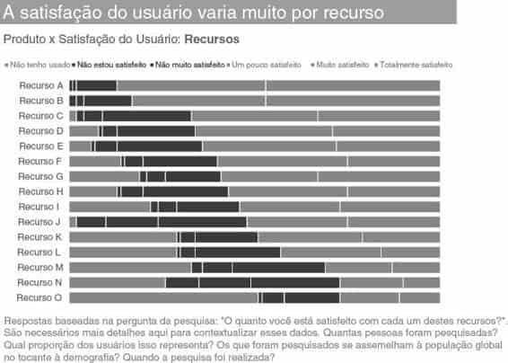
FIGURA 9.16 MONTE O GRÁFICO
A Figura 9.16 mostra nosso visual básico, sem nada realçado. Se eu fosse apresentar isso para um público, usaria essa versão para conduzi-lo pelo que estaria olhando: respostas de uma pesquisa com a pergunta: “O quanto você está satisfeito com cada um destes recursos?” — variando do positivo “Totalmente satisfeito”, à direita, até “Não estou satisfeito” e, finalmente, “Não tenho usado”, à esquerda (aproveitando a associação natural de positivo à direita e negativo à esquerda). Então, faria uma pausa para contar cada uma das histórias sucessivamente.
Primeiro vem um visual semelhante àquele com o qual começamos na última série, que destaca onde os usuários estão mais satisfeitos. Nessa versão, eu usei diferentes tons de azul, para chamar a atenção não somente para a proporção de usuários que estão satisfeitos, mas especificamente para os recursos A e B dentro dos segmentos com classificação mais alta, vinculando visualmente essas barras ao texto que ilustra meu ponto. Veja a Figura 9.17.
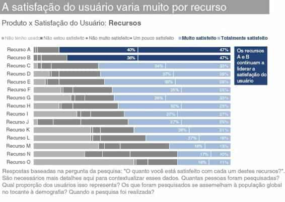
FIGURA 9.17 SATISFAÇÃO
Isso é seguido por um enfoque na outra extremidade do espectro, onde os usuários estão menos satisfeitos, novamente exaltando e destacando pontos de interesse específicos. Veja a Figura 9.18.
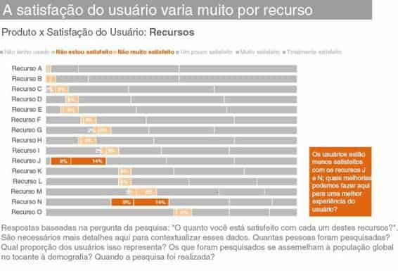
FIGURA 9.18 INSATISFAÇÃO
Observe como na Figura 9.18 não é tão fácil ver a ordem de classificação relativa dos recursos destacados, como acontecia quando estavam colocados em ordem decrescente (Figura 9.14), pois não estavam alinhados ao longo de uma linha de base comum, nem à esquerda nem à direita. Ainda podemos ver as principais áreas de insatisfação (recursos J e N) de forma relativamente rápida, pois são muito maiores que as outras categorias e por causa da ênfase colorida. Adicionei também uma caixa de legenda para destacar isso por meio de texto.
Por fim, preservando a mesma ordem, podemos chamar a atenção de nosso público para os recursos não usados. Veja a Figura 9.19.
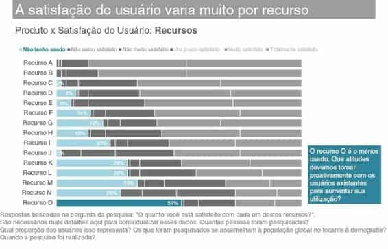
FIGURA 9.19 RECURSOS NÃO USADOS
Na Figura 9.19 é mais fácil ver a ordem de classificação (mesmo que as categorias não aumentem monotonicamente de cima para baixo), devido ao alinhamento com uma linha de base uniforme à esquerda do gráfico. Aqui, queremos que nosso público enfoque principalmente o recurso inferior no gráfico — o recurso O. Como estamos tentando preservar a ordem estabelecida e não podemos fazer isso colocando-o na parte superior (onde o público o encontraria primeiro), a cor escura e a caixa de legenda ajudam a chamar a atenção para a parte inferior do gráfico.
As visões anteriores mostram a progressão que eu usaria em uma apresentação ao vivo. O uso limitado e estratégico de cor me permite direcionar a atenção do público para um componente dos dados por vez. Se você estiver criando um documento escrito para compartilhar diretamente com seu público, pode compactar todas essas visões em apenas um visual abrangente, como mostrado na Figura 9.20.
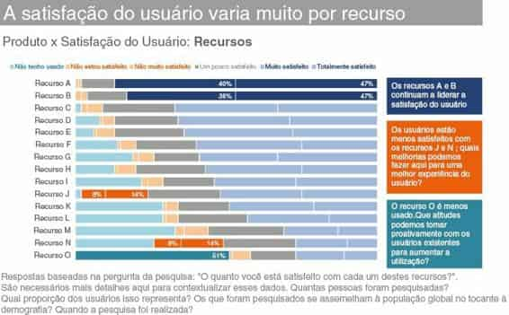
FIGURA 9.20 VISUAL ABRANGENTE
Quando processo a Figura 9.20, meus olhos fazem vários zigue-zagues em forma de “z” pela página. Primeiro, vejo o destacado “Recursos” no título do gráfico. Então, sou atraída para as barras escuras — as quais sigo até a caixa de texto escura que me diz o que é interessante no que estou olhando (você vai notar que meu texto aqui é predominantemente descritivo, principalmente devido ao anonimato do exemplo; de preferência, esse espaço seria usado para dar mais ideias). Em seguida, chego à caixa de texto cinza escura, a leio e dou uma olhada à esquerda para ver a evidência no gráfico que a corrobora.
Por fim, vejo a barra cinza clara enfatizada na parte inferior e olho no outro lado para ver o texto que a descreve. O uso estratégico de cor diferencia as várias séries, ao passo que também torna claro onde o público deve procurar a evidência específica do que está sendo descrito no texto.
Note que na Figura 9.20 é mais difícil seu público tirar outras conclusões com os dados, pois a atenção é fortemente atraída para os pontos em particular que quero destacar. Mas, como já discutimos repetidamente, uma vez que você tenha atingido o ponto que precisa comunicar, deve haver uma história específica ou ponto a destacar, em vez de permitir que seu público tire suas próprias conclusões. A Figura 9.20 é densa demais para uma apresentação ao vivo, mas poderia funcionar bem para o documento que será distribuído.
Já mencionei isso, mas seria negligência não destacar que, em alguns casos, existe uma ordem intrínseca nos dados que você quer mostrar (categorias ordinais). Por exemplo, em vez de recursos, se as categorias fossem faixas etárias (0 a 9, 10 a 19, 20 a 29 etc.), você deveria mantê-las em ordem numérica. Isso fornece uma construção importante para o público usar ao interpretar a informação. Então, use os outros métodos para chamar a atenção (por meio de cor, posição, caixas de legenda com texto) para direcionar o público para onde você quer.
Ponto principal: deve haver lógica na ordem dos dados que você mostra.
Embora eu goste muito de comida, tenho aversão a qualquer tipo de gráfico que tenha comida em seu nome. Meu ódio por gráficos de pizza é bem documentado. Roscas são ainda piores. Este é outro para acrescentar à lista: o gráfico de espaguete.
Se você não tem certeza se já viu um gráfico de espaguete, aposto que sim.
Um gráfico de espaguete é um gráfico de linhas no qual as linhas se sobrepõem muito, tornando difícil focar uma série de dados por vez. Eles se parecem com a Figura 9.21.
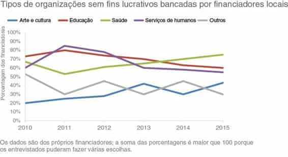
FIGURA 9.21 O GRÁFICO ESPAGUETE
Gráficos como o da Figura 9.21 são conhecidos como gráficos espaguete porque parece que alguém pegou um punhado de talharim cru e jogou no chão. E são quase tão informativos quanto o talharim aleatório seria … o que quer dizer … nem um pouco informativos.
Note como é difícil se concentrar em uma única linha nessa bagunça, graças e todo o entrecruzado e porque muita coisa está competindo por sua atenção.
Existem algumas estratégias para pegar um gráfico que seria de espaguete e dar mais sentido visual aos dados. Vou abordar três delas e mostrá-las aplicadas de duas maneiras diferentes aos dados representados na Figura 9.21, a qual mostra tipos de organizações sem fins lucrativos bancadas por financiadores em determinado local. Primeiro, vamos ver uma estratégia que você deve conhecer a esta altura: usar atributos pré-atentivos para enfatizar uma linha por vez. Depois disso, vamos examinar duas visões que separam as linhas espacialmente. Por último, vamos ver uma estratégia combinada que aproveita elementos dessas duas primeiras.
Um modo de impedir que o gráfico espaguete se torne visualmente opressivo é usar atributos pré-atentivos a fim de chamar a atenção para uma linha por vez. Por exemplo, poderíamos fazer nosso público focalizar o aumento percentual dos financiadores que fazem doações no decorrer do tempo para organizações sem fins lucrativos voltadas à saúde. Veja a Figura 9.22.
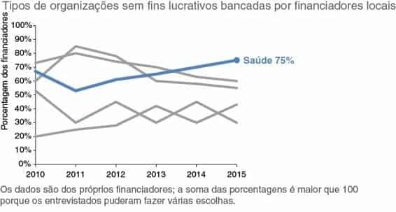
FIGURA 9.22 ENFATIZE UMA ÚNICA LINHA
Ou então, poderíamos usar a mesma estratégia para enfatizar a diminuição na porcentagem de financiadores que fazem doações para organizações sem fins lucrativos relacionadas à educação. Veja a Figura 9.23.
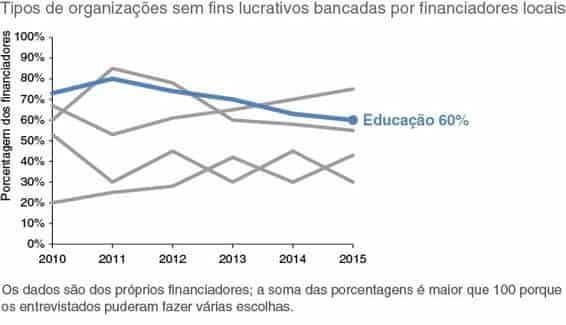
FIGURA 9.23 ENFATIZE OUTRA LINHA ÚNICA
Nas Figuras 9.22 e 9.23, cor, espessura de linha e marcas adicionadas (o marcador e a legenda de dados) atuam como dicas visuais para chamar a atenção para onde queremos que nosso público se concentre. Essa estratégia pode funcionar bem em uma apresentação ao vivo, na qual você explica os detalhes do gráfico uma vez (como vimos nos estudos de caso recentes) e, então, percorre as várias séries de dados dessa maneira, destacando o que é interessante ou ao que se deve prestar atenção e por quê. Note que precisamos dessa “narrativa oculta” ou da adição de texto para tornar claro o motivo de estarmos realçando determinados dados e fornecer a história para nosso público.
Podemos desembaraçar o gráfico espaguete separando as linhas vertical ou horizontalmente. Primeiro, vamos ver uma versão na qual as linhas são separadas verticalmente. Veja a Figura 9.24.
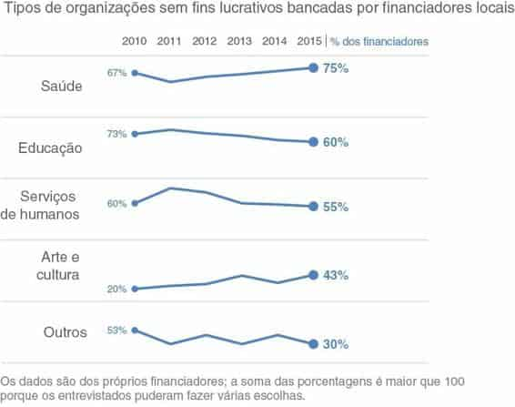
FIGURA 9.24 SEPARE AS LINHAS VERTICALMENTE
Na Figura 9.24, o mesmo eixo x (ano, mostrado em cima) é aproveitado em todos os gráficos. Nessa solução, criei cinco gráficos separados, mas os organizei de tal modo que parecem ser um único gráfico. O eixo y dentro de cada gráfico não é mostrado; em vez disso, as legendas de ponto inicial e final se destinam a fornecer contexto suficiente para que o eixo seja desnecessário. Embora não sejam mostrados, é importante que o mínimo e o máximo do eixo y sejam os mesmos para cada gráfico, a fim de que o público possa comparar a posição relativa de cada linha ou ponto dentro do espaço dado. Se você os reduzisse, eles pareceriam com o que Edward Tufte chama de “sparklines” (um gráfico de linhas muito pequeno, normalmente desenhado sem eixo nem coordenadas para mostrar a forma geral dos dados; Beautiful Evidence, 2006).
Essa estratégia presume que a capacidade de ver a tendência de determinada categoria (Saúde, Educação etc.) é mais importante do que comparar os valores nas categorias. Se esse não for o caso, podemos pensar em separar os dados horizontalmente, como ilustrado na Figura 9.25.
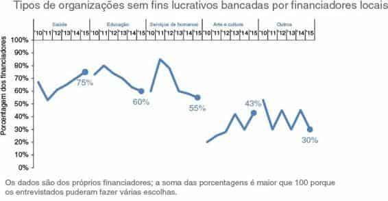
FIGURA 9.25 SEPARE AS LINHAS HORIZONTALMENTE
Enquanto na Figura 9.24 aproveitamos o eixo x (anos) nas cinco categorias, na Figura 9.25 aproveitamos o mesmo eixo y (porcentagem de financiadores).
Aqui, a altura relativa das várias séries de dados permite que sejam mais facilmente comparadas. Podemos ver rapidamente que a porcentagem de financiadores mais alta em 2015 fez doações para Saúde, uma porcentagem mais baixa para Educação, uma ainda mais baixa para Serviços Humanos e assim por diante.
Outra opção é combinar as estratégias descritas até aqui. Podemos separar espacialmente e enfatizar uma linha por vez, enquanto deixamos as outras lá para comparação, mas as colocamos em segundo plano. Como na estratégia anterior, podemos fazer isso separando as linhas verticalmente (Figura 9.26) ou horizontalmente (Figura 9.27).
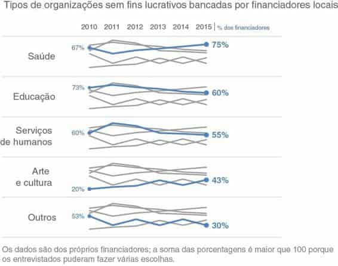
FIGURA 9.26 ESTRATÉGIA COMBINADA, COM SEPARAÇÃO VERTICAL
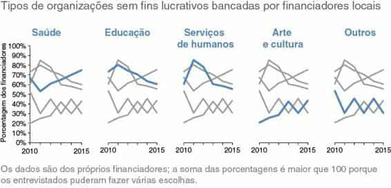
FIGURA 9.27 ESTRATÉGIA COMBINADA, COM SEPARAÇÃO HORIZONTAL
Ter vários gráficos pequenos reunidos, como mostrado na Figura 9.27, às vezes é referido como “pequenos múltiplos”. Como já mencionado, aqui é imperativo que os detalhes de cada gráfico (o mínimo e o máximo do eixo x e do eixo y) sejam os mesmos, para que o público possa comparar rapidamente a série destacada entre os vários gráficos.
Essa estratégia, mostrada nas Figuras 9.26 e 9.27, pode funcionar bem se o contexto do conjunto de dados inteiro é importante, mas você quer focalizar uma linha por vez. Por causa da densidade da informação, essa estratégia combinada pode funcionar melhor para um relatório ou apresentação que vai ser distribuída ao público do que em uma apresentação ao vivo, onde será mais desafiador direcionar seu público para onde você quer que ele olhe.
Como frequentemente acontece, não existe uma única resposta “certa”. A solução que vai funcionar melhor variará de acordo com a situação. A metalição é: se você se deparar com um gráfico espaguete, não pare aí. Pense em qual informação você mais quer transmitir, qual história quer contar e quais mudanças no visual poderiam ajudá-lo a fazer isso eficientemente. Note que, em alguns casos, isso pode significar mostrar menos dados. Pergunte-se: eu preciso de todas as categorias? De todos os anos? Quando apropriado, reduzir o volume de dados mostrados também pode facilitar o desafio de representar dados em gráfico, como os mostrados neste exemplo.
Lembre-se do cenário que discutimos no Capítulo 1, do curso de verão sobre ciências. Para refrescar sua memória: você acabou de concluir um programa-piloto sobre ciências, destinado a melhorar as percepções sobre a área entre crianças do 2º e 3º anos do ensino básico. Você fez uma avaliação no início e no final do curso, e quer usar esses dados como evidência do sucesso do programa-piloto em seu pedido de financiamento futuro. A Figura 9.28 mostra a primeira tentativa de colocar esses dados em um gráfico.
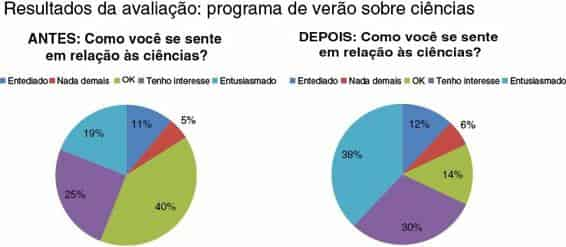
FIGURA 9.28 VISUAL ORIGINAL
Os dados da avaliação demonstram que, de acordo com o sentimento melhorado em relação às ciências, o programa-piloto foi um grande sucesso.
Ao entrar no programa, o maior segmento dos alunos (40%, a fatia mais clara na Figura 9.28, à esquerda) achava ciências apenas “OK” — talvez não tivessem uma opinião formada sobre o assunto. No entanto, depois do programa (Figura 9.28, à direita), vemos que os 40% em verde são reduzidos a 14%. “Entediado” (azul) e “Nada demais” (vermelho) subiram um ponto percentual cada, mas a maior parte da mudança foi em uma direção positiva.
Depois do programa, quase 70% das crianças (segmentos violeta e azul-esverdeado) expressaram algum grau de interesse nas ciências.
A Figura 9.28 presta um grande desserviço a essa história. Compartilhei minha visão desfavorável em relação aos gráficos de pizza no Capítulo 2; assim, espero que esse julgamento não surpreenda. Sim, você pode chegar à história a partir da Figura 9.28, mas precisa trabalhar para isso e superar a irritação de tentar comparar segmentos entre duas pizzas. Como já discutimos, queremos limitar ou eliminar o trabalho que seu público tem de chegar à informação, e certamente não queremos irritá-lo. Podemos evitar tais desafios escolhendo um modelo de apresentação diferente.
Vamos ver quatro alternativas para exibir esses dados — mostrar os números diretamente, gráfico de barras simples, gráfico de barras horizontais empilhadas e gráfico de inclinação — e discutir algumas considerações sobre cada uma.
Se a melhora no sentimento positivo é a principal mensagem que queremos transmitir ao nosso público, podemos pensar em tornar essa a única informação a comunicar. Veja a Figura 9.29.
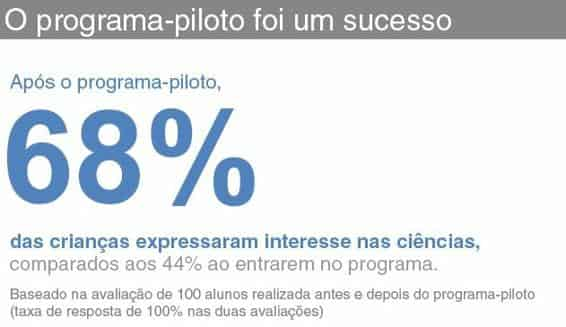
FIGURA 9.29 MOSTRE OS NÚMEROS DIRETAMENTE
Muito frequentemente, achamos que precisamos incluir todos os dados e ignorar a simplicidade e o poder de nos comunicarmos com apenas um ou dois números diretamente, como demonstrado na Figura 9.29. Dito isso, se você achar que precisa mostrar mais, examine uma das alternativas a seguir.
Quando você quer comparar duas coisas, geralmente deve colocá-las o mais próximas possível e alinhá-las ao longo de uma linha de base comum para facilitar essa comparação. O gráfico de barras simples faz isso, alinhando as respostas de Antes e Depois da avaliação, com uma linha de base uniforme na parte inferior do gráfico. Veja a Figura 9.30.
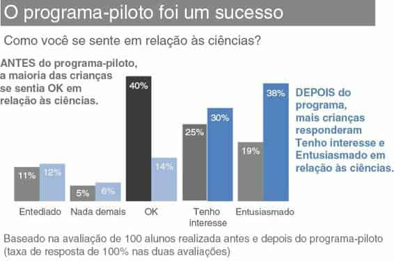
FIGURA 9.30 GRÁFICO DE BARRAS SIMPLES
Sou parcial nessa visão para este exemplo específico, porque o layout possibilita colocar as caixas de texto diretamente ao lado dos pontos de dados que descrevem (note que outros dados estão lá para contextualizar, mas são ligeiramente colocados em segundo plano por meio do uso de tons mais claros). Além disso, tendo Antes e Depois como principal classificação, posso limitar o visual a duas cores, como preto e azul, ao passo que três tonalidades serão usadas nas alternativas a seguir.
Quando o conceito de parte do todo é importante (algo que você não consegue com a Alternativa 1 ou 2), o gráfico de barras horizontais empilhadas a 100% consegue isso. Veja a Figura 9.31. Aqui, você tem uma linha de base uniforme para usar na comparação, à esquerda e à direita do gráfico. Isso permite que o público compare facilmente os segmentos negativos, à esquerda, e os segmentos positivos, à direita, nas duas barras e, por isso, é uma maneira útil de visualizar dados de pesquisa em geral.
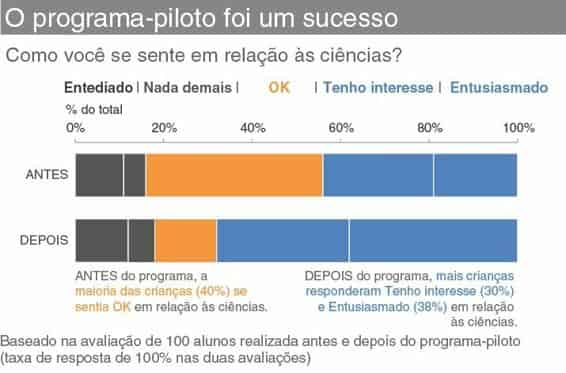
FIGURA 9.31 GRÁFICO DE BARRAS HORIZONTAIS EMPILHADAS A 100%
Na Figura 9.31, optei por manter as legendas do eixo x, em vez colocar legendas de dados diretamente nas barras. Eu tendo a fazer isso quando uso barras empilhadas a 100%, a fim de usar a escala da parte superior para ler da esquerda para a direita ou da direita para a esquerda. Neste caso, isso nos permite atribuir números para a mudança de Antes para Depois na extremidade negativa da escala (“Entediado” e “Nada demais”) ou da direita para a esquerda, fazendo o mesmo para a extremidade positiva (“Tenho interesse” e “Entusiasmado”).
No gráfico de barras simples mostrado antes (Figura 9.30), optei por omitir o eixo e legendar as barras diretamente. Isso ilustra como diferentes visões de seus dados podem levá-lo a diferentes escolhas de design. Pense sempre em como quer que seu público use o gráfico e faça suas escolhas de design de forma correspondente: diferentes escolhas farão sentido em diferentes situações.
A última alternativa que vou apresentar aqui é o gráfico de inclinação. Como no caso do gráfico de barras simples, nesta visão você não tem uma ideia clara de haver um todo e, assim, partes de um todo (como acontecia na pizza inicial ou nas barras horizontais empilhadas a 100%). Além disso, se for importante ordenar suas categorias de determinada maneira, um gráfico de inclinação nem sempre será ideal, pois as várias categorias são colocadas de acordo com os respectivos valores de dados.
No lado direito da Figura 9.32, você tem a extremidade positiva da escala na parte superior, mas note que “Entediado” e “Nada demais”, na parte inferior, estão trocados em relação a como apareciam em uma escala ordinal, por causa dos valores correspondentes a esses pontos. Se precisar impor a ordem das categorias, use o gráfico de barras simples ou o gráfico de barras empilhadas a 100%, no qual isso pode ser controlado.
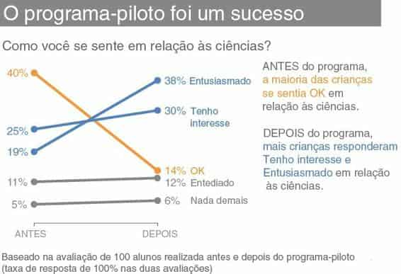
FIGURA 9.32 GRÁFICO DE INCLINAÇÃO
Com o gráfico de inclinação da Figura 9.32, você pode ver a mudança percentual de Antes e Depois para cada categoria, por meio da inclinação da respectiva linha. É fácil ver rapidamente que a categoria que mais aumentou foi “Entusiasmado” (devido à inclinação pronunciada) e que a categoria que declinou acentuadamente foi “OK”. O gráfico de inclinação também fornece clara ordem visual das categorias, da maior para a menor (via seus respectivos pontos no espaço, de cima para baixo, nos lados esquerdo e direito do gráfico).
Qualquer uma dessas alternativas pode ser a melhor escolha, dada a situação específica, como você deseja que seu público interaja com a informação e qual ponto (ou pontos) quer enfatizar. A grande lição aqui é que você tem várias alternativas às pizzas que podem ser mais eficazes para explicar seu ponto.
Neste capítulo, discutimos considerações e soluções para enfrentar desafios comuns na comunicação visual com dados. Inevitavelmente, você encontrará desafios de visualização de dados dos quais não tratamos. Há muito a ser aprendido do pensamento crítico envolvido na solução de alguns desses cenários, assim como da própria “resposta”. Conforme discutimos, na visualização de dados raramente há um único caminho ou solução correta.
Para mais estudos de caso como os que consideramos aqui, veja meu blog, em inglês, onde você encontrará vários exemplos de “antes e depois” que utilizam as lições que aprendemos.
Quando você se encontrar em uma situação na qual não tem certeza de como proceder, quase sempre recomendo a mesma estratégia: considere seu público. O que você precisa que ele saiba ou faça? Que história pretende contar a ele? Frequentemente, respondendo a essas perguntas, um bom caminho para como apresentar seus dados se tornará claro. Caso contrário, tente várias visões e busque opiniões.
Meu desafio para você é considerar como pode aplicar todas as lições que aprendemos e suas habilidades de pensamento crítico nos diversos e variados problemas de visualização de dados que encontrar. A responsabilidade — e a oportunidade — de contar uma história com dados é sua.